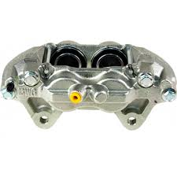
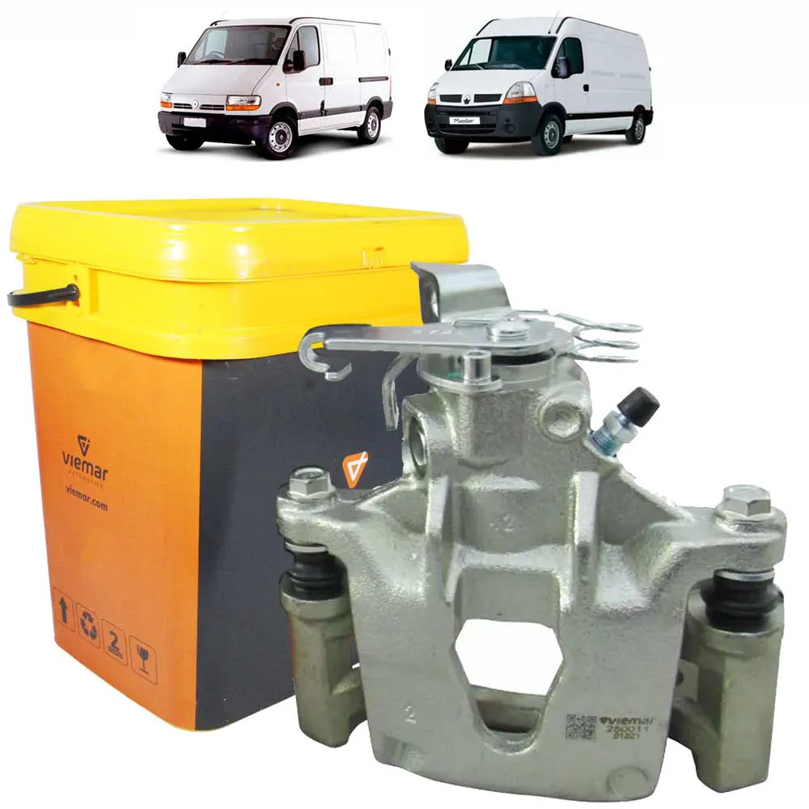

A pinça de freio é onde são instaladas as pastilhas de freio. Ela opera através de cabos de aço que passam pelo conduíte e chegam a pinça, que é o responsável por acionar as pastilhas de freio realizando a frenagem.